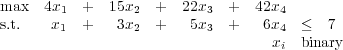

Prove that Tx ≤ b is a facet defining inequality for PLOn+1.
Solution:
There are dim(PLOn) orderings of n objects with affinely independent incident vectors that satisfy aTx = b. These orderings can be extended to orderings of n + 1 objects by adding object n + 1 at the end. We need another
orderings. Pick any one of the original dim(PLOn) orderings and insert item n + 1 before any of the original n objects. The resulting incidence vectors are affinely independent since as object n + 1 is moved earlier in the ordering, one component of the incidence vector that was zero in all the previously considered orderings is now equal to one.
Solution:
We use proof by induction. Question 1 gives the inductive step, we need to prove the base case. We take n = 3 as the base case. Now dim(PLO3)=3, so we need three affinely independent vectors satisfying a constraint at equality for it to be facet defining.
- xij ≥ 0: Consider the three orderings jik, jki, kji. Looking just at components ij, ik, jk, the three incidence vectors are a1 := (0,1,1), a2 := (0,0,1), and a0 := (0,0,0). The two vectors a1 -a0 and a2 - a0 are linearly independent, so the three incidence vectors are affinely independent.
- xij + xjk + xki ≤ 2: Consider the three orderings ijk, kij, jki. Looking just at components ij, ik, jk, the three incidence vectors are a1 := (1,1,1), a2 := (1,0,0), and a0 := (0,0,1). The two vectors a1 - a0 and a2 - a0 are linearly independent, so the three incidence vectors are affinely independent.
|
| (1) |
is valid for PLOn. Find a point n(n-1), 0 ≤ij ≤ 1, which satisfies ij + ji = 1 for 1 ≤ i,j ≤ n and all the triangle inequalities, but which violates (1) with k = 3. (Note that the inequality includes k edges pointing up in the picture and k(k - 1) = k2 - k edges pointing down.)
Solution:
The proof: There are multiple ways to prove the constraint is valid. We give two.
First proof:
We show that any binary vector violating (1) cannot correspond to an ordering. Assume the binary solution has p edges with xui,wi = 1, and let I denote the corresponding set of indices. Note that we must have p ≥ 2. We consider the objects
and show that the binary vector does not correspond to an ordering on these vertices.
There are k(k - 1) edges of the form (wi,uj) with 1 ≤ i,j ≤ k. Since (1) is violated, the number of edges with xwi,uj = 1 with 1 ≤ i,j ≤ k must be at least k2 -k + 2 -p with i I and j I. Hence the number of edges with xwi,uj = 1 with i I and j I must be at least
Assume xwi,uj = 1 with i I and j I. Since x satisfies the triangle inequalities, we must have xwi,wj = 1 also. So
But from the equality constraints, we have
So the binary vector cannot correspond to an ordering.
Second proof:
This is an inductive proof.
Base case: The result holds when k = 2, since k2 - k + 1 = 3 in this case, and the only binary solution that violates (1) has four edges that form a cycle, so it cannot correspond to an ordering.
Inductive step: Assume the result holds for k ≤ p where p ≥ 2, show it holds for k = p + 1. When k = p + 1, the inequality (1) can be written:
|
| (2) |
We argue that any binary solution that violates (2) does not correspond to an ordering. From the inductive hypothesis, we know
|
| (3) |
From a simple counting argument, we know
|
| (4) |
Thus, (2) can be violated by at most one, and only if both (3) and (4) hold at equality. If (3) holds at equality then there must be an index q for which xuq,wq = 1, with 1 ≤ q ≤ p. If (4) holds at equality then we must have
Thus, the solution contains a cycle of length four through the nodes uq → wq → uk+1 → wk+1 → uq, so it doesn’t correspond to an ordering.
Violating point:
A point that satisfies all the linear constraints in the description of PLOn but violates (1) for k ≥ 3:
No triangle contains more than one arc e with xe = 1, so all the triangle inequalities are satisfied. The left hand side of (1) evaluates to k(k - 1) + 0.5k = k2 - k + 0.5k > k2 - k + 1 if k ≥ 3.
-

-
 -
Solution:
- Solution to LP relaxation is x = (1,1,0.6,0). This leads to the minimal cover {2,3} and the minimal
cover inequality
Lifting on x1 and then x4 gives the facet defining inequality
Lifting in the other order gives the same inequality.
- Solution to LP relaxation is x = (0,,0,1). This leads to the minimal cover {2,4} and the minimal cover
inequality
Lifting on x1 and then x3 gives the facet defining inequality

Lifting in the other order gives the same inequality.
- Solution to LP relaxation is x = (1,0.4,1,0). This leads to the minimal cover {1,2,3} and the minimal
cover inequality
Lifting on x1 and then x4 gives the facet defining inequality
Lifting in the other order gives the same inequality.
Solution:
There exist multipliers λ1,…,λm, not all zero, with
It follows that
Hence, ∑ i=1mλi = 0 so the vectors are affinely dependent.